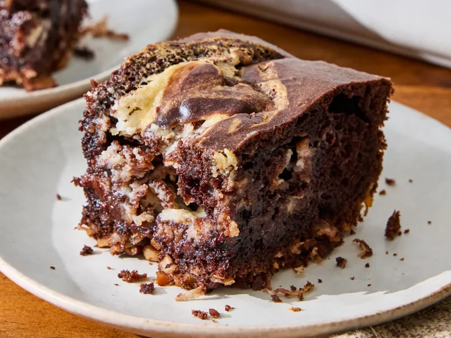

German Chocolate Dump Cake:-

Home
Description:-
- This German chocolate dump cake tastes like the real thing, but batter, filling,
and topping elements are all baked together.
- It has the pecan and coconut flavors you expect,
and the cream cheese swirl carries the frosting flavor.
- It’s nicely moist, and you get crunchy bits—really enjoyable.
Ingredients:-
- Pecans (Toasted, Chopped, Divided): 1 2/3 cups
- Coconut (Sweetened, Flaked): 1 cup
- Devil's Food Cake Mix: 1 (2-layer size) package
- Eggs: As specified for the cake mix
- Oil: As specified for the cake mix
- Water: As specified for the cake mix
- Cream Cheese (Softened): 1 (8 ounce) package
- Butter (Melted): 1/2 cup
- Vanilla Extract: 2 teaspoons
- Salt: 1/4 teaspoon
- Sugar (Powdered): 1 cup
- Semisweet Chocolate Chips: 2/3 cup
Steps:-
- Heating:
- Preheat the oven to 350 degrees F (175 degrees C).
- Grease a 9x13-inch baking pan.
- Sprinkling:
- Sprinkle 1 cup pecans and coconut in the prepared pan.
- Preparations:
- Prepare cake mix according to package directions.
- Pour batter over coconut and pecans in the pan.
- Mixing Ingredients:
- Beat cream cheese with an electric mixer in a bowl until smooth, about 30 seconds.
- Beat in melted butter, vanilla and salt.
- Beat in powdered sugar until smooth.
- Stir in chocolate chips and remaining 2/3 cup pecans.
- Pasting:
- Drop spoonfuls of the cream cheese mixture over the cake batter.
- Swirl the cream cheese mixture and cake batter together using a butter knife or thin spatula.
- Baking:
- Bake in the preheated oven until a toothpick inserted in the center comes out clean, 32 to 38 minutes.
- Cooling:
- Cool completely on a wire rack.